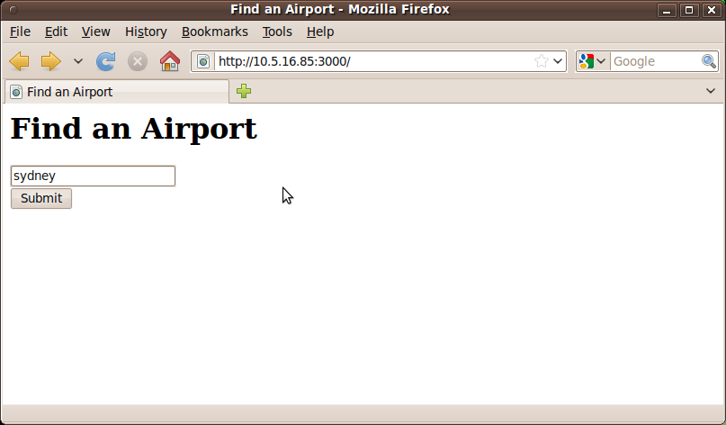
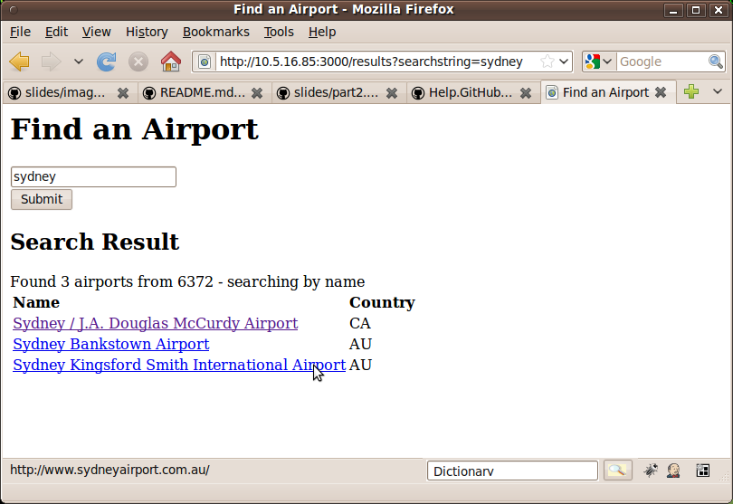

Implementing an MVC web application
Our project is to implement a single page website like this:


It will be similar to the elementary website we just developed, but because it's larger and more complex we'll need to give it more structure, separating things out a bit more so that the code is easy to understand and maintain.
The structure we use in this section is the Model-View-Controller (MVC) framework. A model is the code which accesses and manipulates the data. The view is (in our case) the HTML/Template Toolkit file which dictates how the output is presented to the user. The controller is the code which connects a URL with a view, and uses a module to populate a view with the appropriate data.
Play with the script below to understand how it works. We'll be calling the modules Airport::Data and Airport::Search it's based on from our website controller.
$ cd code/part2/airport-toolkit
$ ./bin/search_airports --matching riga --word
$ ./bin/search_airports --latitude 56.923 --longitude 23.9710 \
--number 3 --distance 0.01
Exercise 1. Implement the skeleton described below
The following code is a skeleton on which you'll be building the website. Save these files in the specified locations and complete the template so that the site runs without errors.
A) The script: part2/ex1/wsa
This is surprisingly minimal, but we're putting all the route handlers into Airport::Controller and the 'set' calls are being replaced with the contents of a config file
#!/usr/bin/perl
use Dancer;
use Airport::Controller;
Dancer->dance;
B) The config file: part2/ex1/config.yml
Instead of having 'set' calls in the perl code we're putting all the settings in a config file which can be changed without modifying the code.
engines:
template_toolkit:
start_tag: '[%'
stop_tag: '%]'
template: 'template_toolkit'
logger: 'console'
log: 'debug'
show_errors: 1
NOTE Remember the "banana skin" (in Part 1 exercise 4)? Because we've put engines and template into a config file the ordering no longer matters.
C) The handlers module part2/ex1/lib/Airport/Controller.pm
package Airport::Controller;
use Dancer;
get '/' => sub {
template 'index';
};
get '/results' => sub {
my $searchstring = params->{searchstring};
template 'index' => {
searchstring => $searchstring,
searchresults => [
{ name => 'Kentucky Fried Airport', iso_country => 'Kentucky' },
{ name => 'McAirport', iso_country => 'United State of Texas' },
],
};
};
1;
D) The template views/index.tt
<html>
<head><title>Find an Airport</title></head>
<body>
<h1>Find an Airport</h1>
<form action="results" method="get">
<input type="text" name="searchstring" value="[%searchstring%]"/><br />
<input type="submit" value="Submit" />
</form>
[% IF searchresults %]
<h2> Search Result </h2>
<table>
<tr><td><b>Name</b></td><td><b>Country</b></td></tr>
-----> FIXME: ADD THE FOREACH LOOP TO FILL IN COLUMNS HERE
</table>
[% END %]
</body>
</html>
NOTE: wsa and the config.yml have to be in the directory containing the
'views' and 'lib' subdirectories otherwise wsa needs to be told where to
look for everything.
Move on to Exercise 2 once you've changed views/index.tt to display the aiports being sent back from the controller.
Exercise 2: Start using the Toolkit
In this exercise we start using the airport-toolkit
A) Toss in the ingredients
$ cp -r ex1 ex2
$ cp -r airport-toolkit/* ex2
Add to config.yml
the line
airports_csv: 'data/iata_airports.csv'
B) Edit Airport::Controller so that it loads the array of
airports generated with Airport::Data::parse_airports
into a package variable which will be used in
the search function.
NOTES
Due to the config settings above, the filename to pass into Airport::Data::parse_airports is setting('airports_csv')
For hints at how this is done, look at
bin/search_airportsthe array of airports should be declared and populated outside a subroutine so it is only populated the first time the
Airport::Controllermodule is loaded rather than every time we do a search.
C) Add the number of airports line to the top of the index/results page
as in the example 'screenshots' above using the number of
elements in the array value being passed to the template.
Exercise 3: Taking the hint
Decide on whether to search for airports by location or by name by analysing the user's input.
$ cp -r ex2 ex3
Instead of just writing 'Found X airports from 6372' below the search result it would be more informative to say
'Found X airports from 6372 - searching by location'
or
'Found X airports from 6372 - searching by name'
Use Airport::Data::parse_search_string to process the user's input.
Exercise 4: Give up on dancing metaphors
This is where we display the correct search results
$ cp -r ex3 ex4
Use Airport::Search::get_name_matching_airports
or Airport::Search::get_latlong_matching_airports to populate the
search results with the correct data.
Also - turn 'X' into the number of airports found.
Dance the night away...
Exercise 5 For each airport, if it has a home_link, make it a link when you click on the airport name.
Exercise 6 Place another link to the right of each link to get the airports near this one (1 degree circumference)
... and dancing on speed
- Exercise 10 Let dancer lead this time:
$ mkdir part3
$ cd part3
$ man dancer
$ dancer -a Airport
...